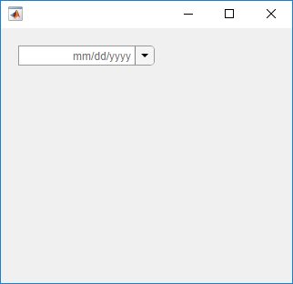

uidatepicker
Create date picker component
Syntax
Description
d = uidatepickerDatePicker object. MATLAB® calls the uifigure function to create the
figure.
d = uidatepicker(Name,Value)DatePicker property values using one or more
Name,Value pair arguments.
d = uidatepicker(parent)Figure object or one of its child
containers.
d = uidatepicker(parent,Name,Value)DatePicker property values.
Examples
Create a date picker in the upper left corner of a UI figure.
fig = uifigure('Position',[500 500 320 280]); d = uidatepicker(fig,'Position',[18 235 150 22]);

Create a date picker that displays the date in the text field using the
dd-MM-yyyy format. The watermark in the running app
displays the new format, and all selected dates use that format.
fig = uifigure('Position',[500 500 320 280]); d = uidatepicker(fig,'Position',[18 235 150 22]); d.DisplayFormat = 'dd-MM-yyyy';

Create a date picker that disables Sundays and New Year's day 2018.
fig = uifigure('Position',[500 500 375 280]); d = uidatepicker(fig,'Position',[18 225 150 22]); d.DisabledDaysOfWeek = 1; d.DisabledDates = datetime(2018,1,1);
When you expand the date picker and browse to January 2018, the first day of the year and all Sundays are disabled.

Create a program file called mydateapp.m that creates a
figure and a date picker with a ValueChangedFcn
callback.
function mydateapp fig = uifigure('Position',[340 400 415 300]); d = uidatepicker(fig,'DisplayFormat','MM-dd-yyyy',... 'Position',[130 190 150 22],... 'Value',datetime(2014,4,9),... 'ValueChangedFcn', @datechange); function datechange (src,event) lastdate = char(event.PreviousValue); newdate = char(event.Value); msg = ['Change date from ' lastdate ' to ' newdate '?']; % Confirm new date selection = uiconfirm(fig,msg,'Confirm Date'); if (strcmp(selection,'Cancel')) % Revert to previous selection if cancelled d.Value = event.PreviousValue; end end end
The datechange function displays a confirmation dialog
box and determines which button the user clicks in that dialog box. The date
picker reverts to the previous date if the user clicks
Cancel.
Run the program, and click a date to see the confirmation dialog box.
mydateapp